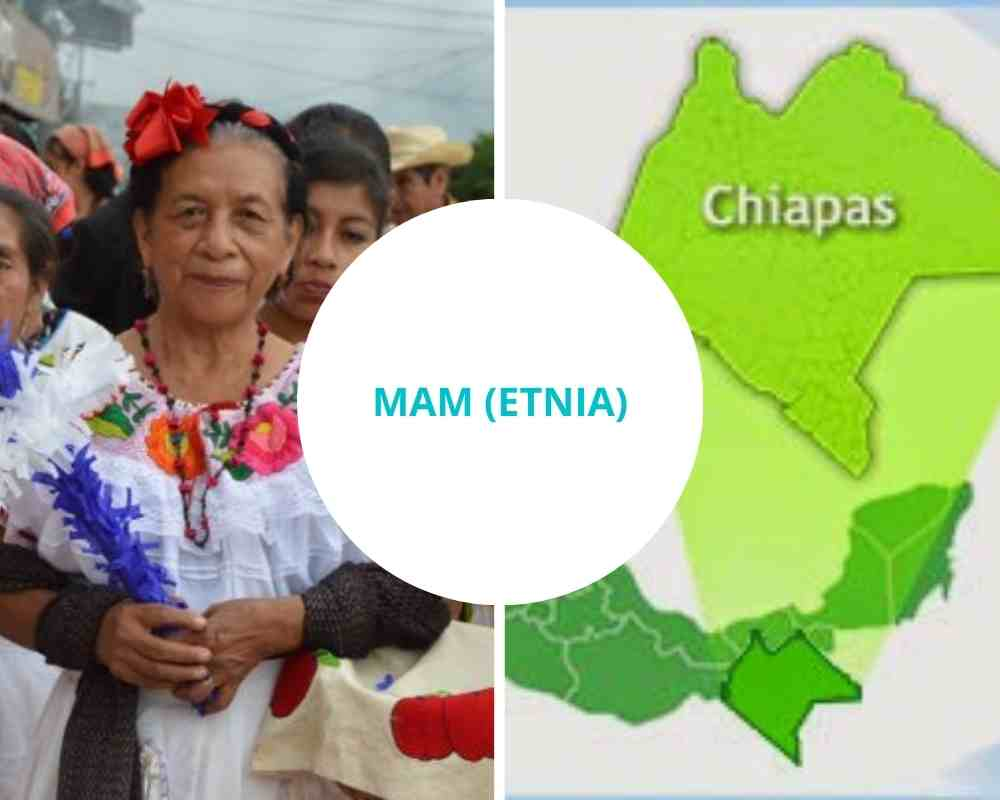

El área históricamente ocupada por los hablantes de mam se localiza en la frontera de Chiapas con el departamento de San Marcos, Guatemala.

En la actualidad, aproximadamente 50,000 hablantes del mam habitan en el Estado de Chiapas. La palabra Mam significa abuelo no sólo en mam, sino en otros idiomas mayas.
Columna imagen
Columna Precio
Columna Audio
$20,000
$40,000
$60,000
<
La Norma de Escritura de la Lengua Mam consta de un alfabeto y de reglas ortográficas consensuadas por los hablantes de la misma, el documento es el resultado del trabajo colaborativo de tres años